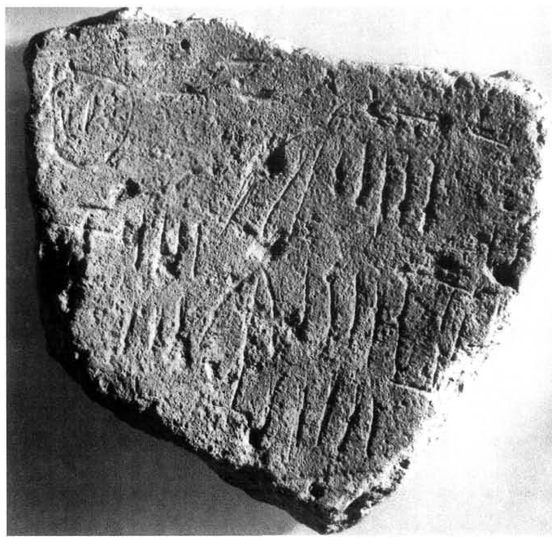
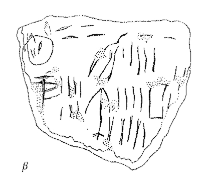

-
THEZg5
Names
Aliases for the inscription.
THEZg5, THE Zg 5
Support
Type of Object.
Stone object
Location
Site where object was found.
Thera
Findspot
Location at Site.
Unavailable


# "Row Index", "Line Index", "Word Index", "Syllabogram", "Status of Reading"
# R L W I S
# 1 0 1 PA certain
1 1 0 MA none
1 1 1 40 none
1 1 2 PU none
1 1 3 5 none
2 2 4 *171 none
2 2 5 7 none
2 2 6 ZO none
2 2 7 9 none
2 2 8 TA none
2 2 9 4 none
Scribe
Writer of Inscription.
Unavailable
Context
Approximate Date of Inscription.
Unavailable
Dimensions
Height x Length x Thickness.
Catalogue
Museum Reference Number.
Readings
Linear A Transcription
A Linear A transcription with words parsed separately.
Line breaks match the inscription.
𐙁𐄓𐘫𐄋
𐙑𐄍𐘎𐄏𐘳𐄊
ASCII Transcription
An ASCII transcription with words parsed separately.
Line breaks match the inscription.
MA40PU5
*1717ZO9TA4
Linear A Tabulation
A Linear A transcription with words parsed separately.
Line breaks are logical, e.g. to represent a list.
𐙁𐄓𐘫𐄋
𐙑𐄍𐘎𐄏𐘳𐄊
ASCII Tabulation
An ASCII transcription with words parsed separately.
Line breaks are logical, e.g. to represent a list.
MA40PU5
*1717ZO9TA4
Commentaries
THE Zb 5
(Owens 1996d, 1999a; Michailidou 1993), ostracon from Akrotiri;
inscription
made after
firing
.1: MA
40
PU
5
.2:
*171
7
ZO
9
TA
4
Commentary © John Younger
References